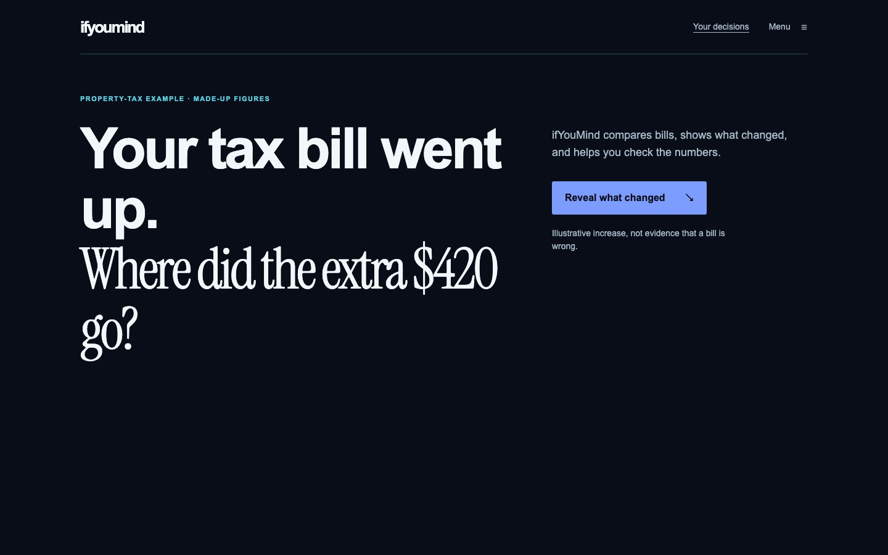
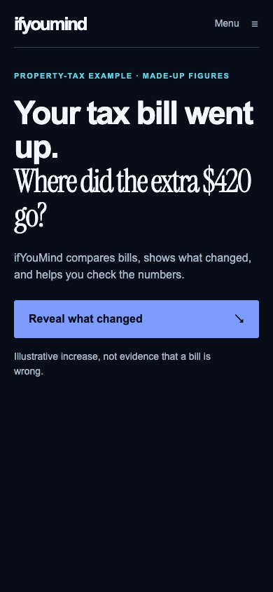
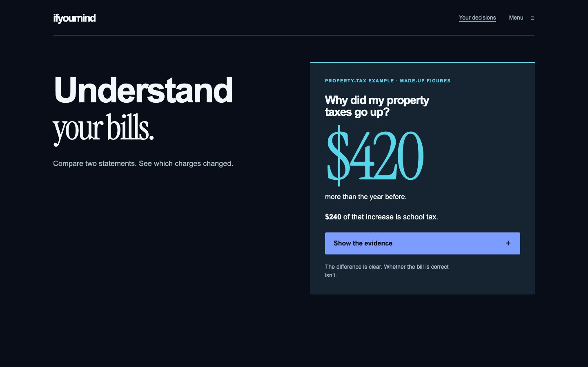
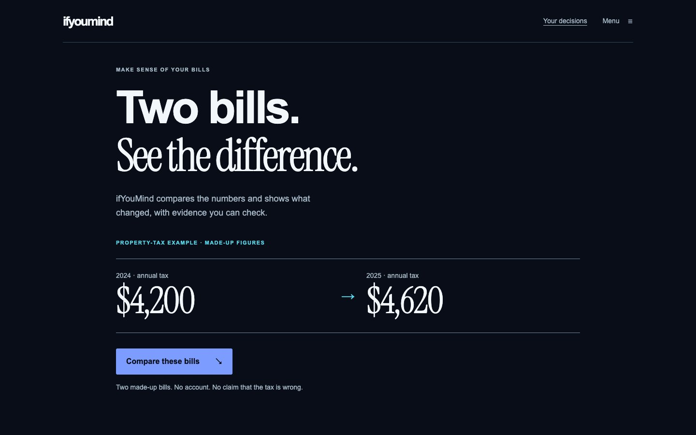
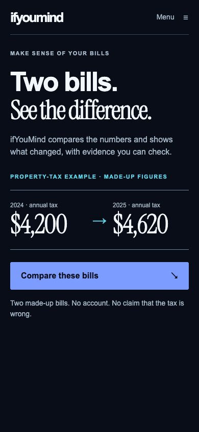

Founder visual review · not product implementation
One clear first impression.
Three ways in.
Same supported example and calculations. The founder selected A, with B’s immediate answer reveal. These original studies remain for comparison; the Angular implementation is verified separately. No user comprehension results have been collected.
A — Follow the question
Reveal what changed
Open working study ↗



B — Give the answer first
Show the evidence
Open working study ↗


C — Compare two bills
Compare these bills
Open working study ↗



Only the first screen and its example disclosure are studies. Own-data, city, account and report links open the existing local product at localhost:4392. Use synthetic information only. See REVIEW.md for the audit, five-task walkthrough and limitations.